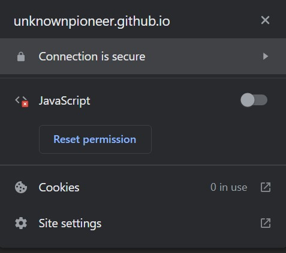

No JavaScript, no problem
JavaScript is switched off
It seems that JavaScript is disabled in your browser. That is perfectly fine here — nothing on this site needs it just to be read.
What does need it?
- the countdown on the maintenance page;
- the maintenance admin tool.
See the article for more information.
How do I enable it?

You should click the Reset Permission
, and enter your target URL.
See also:
How to enable JavaScript in Windows